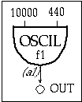

The first orchestra file, called toot1.orc contains a single instrument which uses an oscil unit to play a 440Hz sine wave (defined by f1 in the score) at an amplitude of 10000.
instr 1
a1
oscil
10000, 440, 1
out
a1
endin
Run this with its corresponding score file, toot1.sco :
f1
0
4096
10
1
; use "GEN01" to compute a sine wave
i1
0
4
; run "instr 1" from time 0 for 4 seconds
e
; indicate the "end" of the score

Toot 1: oscil